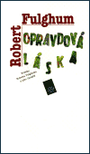

„Pokud se říká, že pravda bývá podivnější než fikce, pak opravdová láska je ještě daleko podivnější…“
Tak dotřetice Robert Fulghum :)…Já vím, že už jsem s těma ódama na Fulghuma otravná :D, i tentokrát vypráví o tom, co už všichni dávno dobře víme, ale dělá to tak okouzlujícím způsobem, že mu prostě nejde odolat. Ještě v něčem je však tahleta knížka přecejen jiná a mimořádná; vznikla zcela neplánovaně, když na Fulghumovu nenápadnou výzvu v knize Ach jo, o které jste na mém blogu už možná četli, zareagovalo neuvěřitelné množství čtenářů: „Kdybychom spolu mluvili v jedné místnosti, nastala by teď chvíle pro vaše milostné minipříběhy. Jestli nějaký pěkný máte, napište to a pošlete mi ho.“ A co se nestalo, Fulghumova schránka se zaplnila dopisy a on ze všech těch neuvěřitelných love-stories poskládal knížku, o které vám teď chci vyprávět.
„Je velký rozdíl mezi první láskou a okamžikem, kdy na lásce poprvé záleží.“
Většinu knížky tvoří historky, které přišly Fulghumovi poštou, ovšem takový příval dopisů vzbudil jeho zvědavost, a proto začal po milostných příbězích slídit i mezi lidmi, kteří píší neradi nebo na to nemají čas. Navštěvoval kavárny, bistra, hospody i ulice Seattlu a snažil se přimět kolemjdoucí, aby se zastavili a povyprávěli mu o své lásce…
„Máme jedině tu lásku, již doopravdy žijeme. A jedině ta láska, kterou máme, je opravdová.“
Abych byla upřímná, pokud nejste aspoň trochu zamilovaní, tak tu knížku radši ani neotvírejte – možná by té lásky mohlo na vás být nepřiměřeně velké množství najednou a její kouzlo by vyprchalo. Pokud ale vedle sebe (nejlépe přímo při čtení, jak doporučuje Fulghum :D) budete mít někoho, koho milujete (a u téhle knížky vám možná dojde, že slovo láska se dá pojmout velmi široce), budete se smát, dojímat i kroutit nevěřícně hlavou. A možná i brečet. Hodně. Za sebe říkám: tohle je jednoznačně Fulghumovo nejlepší dílo ! Paradox ovšem je, že jeho autorem není ani Fulghum, ani jeho čtenáři. Bude to znít jako klišé, ale uznejte sami – Opravdovou lásku napsal sám život ;-)…
„Také jste si všimli, jakou úlohu v těch příbězích hrají neskutečné náhody a taky pekelné štěstí ? Rozhodně to tedy platí o mém vlastním příběhu. Já se se svou ženou seznámil před více než pětadvaceti lety v jedné zahradě v Japonsku. Myslíme si, že naše šance spočívaly asi tak ve třiceti vteřinách a nikdy jindy už by se nám pak cesty skřížit nijak nemohly…“
Stejně jako Robert Fulghum, i vy budete v pauzách mezi jednotlivými příběhy pravděpodobně tiše žasnout, jaké neuvěřitelné náhody někdy lidi svádí dohromady… Jaké maličkosti rozhodují o setkání s někým, kdo vás ovlivní po zbytek života. Jeden večer. Jeden náhlý nápad udělat něco jinak než obvykle. Změna plánu. Jeden pohled. Jeden panák…dobře, ten většinou nebývá jen jeden :D…A stačí tak málo, často pouze pár sekund, aby se ti dva minuli a k setkání nikdy nedošlo. Pro cyniky podotýkám, že ne každá love story skončí happy endem – pro milovníky dobrých konců ovšem dodávám, že happy endy v této knize samozřejmě převažují :-)…
P.S. Při čtení mě mockrát napadlo, co by tak asi Fulghum řekl na mou lovestory :D…Na poslední stránce se (představte si!) zmiňuje o tom, že už nashromáždil dostatek materiálů pro pokračování Opravdové lásky. Ale že přesto vyzývá čtenáře, aby příběhy posílali dál, pokud budou krátké, pravdivé a jiné. Řekla bych, že všechny tři podmínky bych byla schopná splnit :D…jen nevím, jestli bych zvládla ten překlad do angličtiny. Tak si Fulghum asi nepočte :D…a anyway, on by mi tu storku stejně určitě neuvěřil 😀 !

Na závěr by bylo jistě dobré zmínit, že veškerý čistý zisk z knížky šel na konto organizace Prostor pro lidskost. Smekáme a tleskáme  !!!
!!!


{kind=link}
{kind=link}
{kind=link}
{kind=link}
{kind=link}